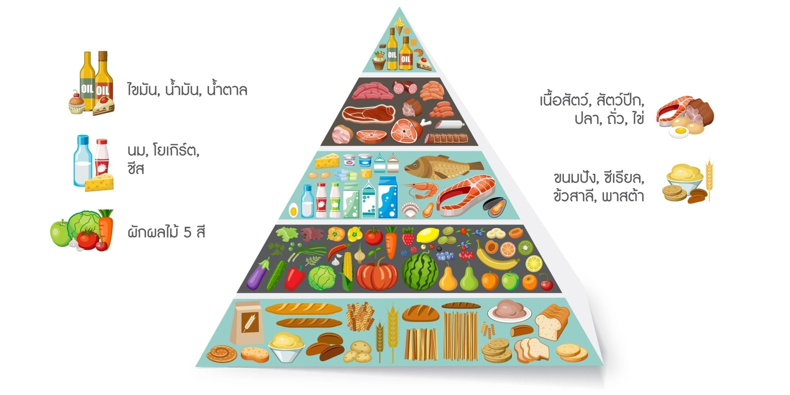

โภชนาการและการรับประทานอาหารเพื่อสุขภาพ
โภชนาการเป็นศาสตร์ที่ศึกษาเกี่ยวกับสารอาหารและความสัมพันธ์ระหว่างอาหารกับสุขภาพของมนุษย์ อาหารเป็นสิ่งจำเป็นต่อการดำรงชีวิต เพราะร่างกายต้องใช้สารอาหารในการสร้างพลังงาน ซ่อมแซมส่วนที่สึกหรอ เสริมสร้างการเจริญเติบโต และควบคุมการทำงานของระบบต่าง ๆ การรับประทานอาหารที่มีคุณค่าทางโภชนาการจึงมีความสำคัญต่อคนทุกวัย โดยเฉพาะวัยรุ่นที่ร่างกายยังมีการเจริญเติบโตและต้องใช้พลังงานในการเรียน การทำกิจกรรม และการพัฒนาสมรรถภาพทางร่างกาย สารอาหารที่จำเป็นต่อร่างกายประกอบด้วยคาร์โบไฮเดรต โปรตีน ไขมัน วิตามิน แร่ธาตุ และน้ำ ซึ่งแต่ละชนิดมีหน้าที่แตกต่างกัน คาร์โบไฮเดรตเป็นแหล่งพลังงานหลักของร่างกาย โปรตีนช่วยเสริมสร้างและซ่อมแซมเนื้อเยื่อ ไขมันให้พลังงานและช่วยในการดูดซึมวิตามินบางชนิด ส่วนวิตามินและแร่ธาตุช่วยควบคุมกระบวนการทำงานต่าง ๆ ของร่างกาย การรับประทานอาหารควรมีความหลากหลายและเหมาะสมกับความต้องการของแต่ละบุคคล รวมถึงควรเลือกรับประทานผัก ผลไม้ ธัญพืช และอาหารที่มีคุณค่าทางโภชนาการ พร้อมทั้งลดอาหารที่มีน้ำตาล ไขมันอิ่มตัว และโซเดียมสูง การมีความรู้ด้านโภชนาการจะช่วยให้สามารถเลือกอาหารได้อย่างเหมาะสม ป้องกันปัญหาสุขภาพที่เกี่ยวข้องกับการรับประทานอาหาร และสร้างนิสัยการกินที่ดีในระยะยาว